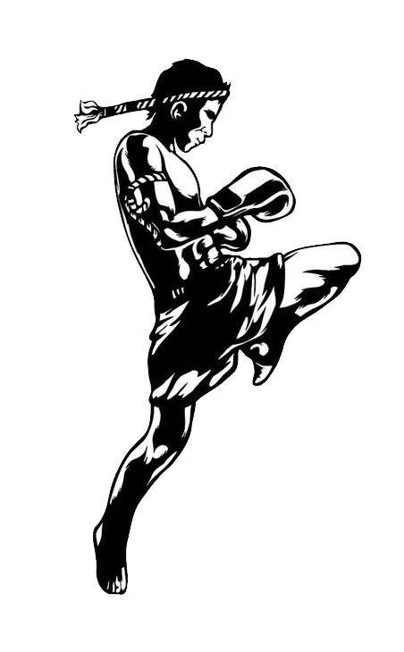

< Scroll Down
This is a showcase of all the things I have learnt since starting my programming journey with Makers Academy just less than a year ago. It contains some of my favorite projects along with a look at some of the other weird and wonderful things I get up too.
Technologies
For me the move into the tech industry was a recent one. I decided to look into new avenues and discovered Makers Academy - one of the best coding bootcamps in the world - and decided to join them to take my career in a new direction. They focused on equiping me with the most important skills and atributes needed to make it in the current tech industry. I learnt important principals such as an Agile workflow, pair programming, test driven development and the importance of clean code just to name a few.


Muay Thai
Boxing
Golf
Sketching
Chess
Film

Before Tech
I started work at a fairly young age as my family considered it to be of the upmost importance to develop a good work ethic as early as possible in life. Like most people, I spent my formative years trying to figure out where I belonged and what I wanted to do in life. For me, that search took longer than I had anticipated. I worked a wide variety of jobs and left university with a certificate of higher education in Engineering & Mathematics before I found my way to the programming world. I can now say that I have found something that I love doing, but I could not have done it without the help of a great many people.